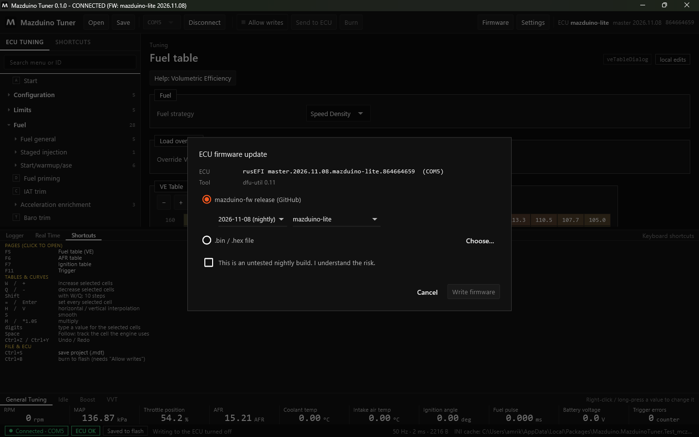

Terakhir diperbarui: 9 November 2026
Update Firmware dengan Mazduino Tuner¶
Firmware ECU Mazduino bisa diupdate langsung dari Mazduino Tuner lewat kabel USB, tanpa jumper BOOT0 dan tanpa software lain.
Sebelum Mulai¶
- Mesin harus mati. Update ditolak jika RPM terbaca.
- Jangan cabut USB atau mematikan ECU selama proses (sekitar 1 menit).
- Tune saat ini otomatis disimpan sebagai
.msqsebelum update, di%APPDATA%\MazduinoTuner\Firmware backups. Tetap disarankan menyimpan proyek.mdtsendiri.
Langkah Update¶
- Hubungkan ECU dan klik Connect.
-
Klik Firmware di toolbar.

-
Pilih sumber firmware:
- mazduino-fw release (GitHub) — pilih tanggal rilis dan board. Board terisi otomatis dari ECU yang terhubung.
- .bin / .hex file — klik Choose... untuk memilih file sendiri. Karena tidak ada yang memastikan file itu untuk board Anda, centang konfirmasi I am sure this firmware is for this ECU.
- Untuk rilis nightly, centang This is an untested nightly build. I understand the risk.
- Klik Write firmware, baca ringkasannya, lalu konfirmasi.
Aplikasi lalu:
- menyimpan tune lama sebagai
.msq - mengirim ECU ke mode bootloader (DFU)
- memasang driver USB bootloader jika belum ada (Windows meminta izin sekali)
- menghapus dan menulis flash, dengan progres di dialog
- menunggu ECU kembali dan menghubungkannya lagi
Selesai jika tertulis Done. The ECU runs ... dengan signature firmware baru.
Memeriksa Tune Setelah Update¶
Firmware baru bisa mengembalikan tune ke nilai bawaan atau menggeser posisi pengaturan. Karena itu, setelah update Mazduino Tuner langsung membandingkan isi ECU dengan tune sebelum update, berdasarkan nama pengaturan.
- Jika semua pengaturan yang tampil di menu sama, tidak ada pertanyaan.
- Jika berbeda, muncul dialog The tune after the firmware update dengan daftar perbedaan (tampilannya sama seperti dialog perbandingan tune).
Untuk firmware Mazduino dengan board yang sama (hanya tanggalnya berbeda) dialog juga menampilkan ringkasan posisi pengaturan:
| Ringkasan | Arti |
|---|---|
| pindah posisi | Dibawa otomatis berdasarkan nama, tidak perlu diubah |
| pengaturan baru | Memakai nilai bawaan firmware baru, periksa nilainya |
| berubah bentuk | Ukuran atau tipe berubah (misalnya ukuran tabel), sesuaikan secara manual |
| dihapus | Tidak ada lagi di firmware baru, diabaikan |
Pilihan:
- Keep what the ECU has now — memakai isi ECU apa adanya.
- Restore the tune from before the update — tune lama dipindah berdasarkan nama ke firmware baru, lalu di-burn.
Untuk firmware lain (board lain, rusEFI official, epicEFI), dialog hanya memberi peringatan
bahwa tune lama tidak bisa dipakai dan harus disamakan secara manual. Backup .msq tetap tersedia
sebagai panduan lewat Compare.
Contoh nyata
Update Mazduino Lite dari firmware 2026-06-22 ke 2026-11-08: firmware baru mengembalikan tune ke nilai bawaan (VE, cranking, trigger offset berubah). Hampir 2000 pengaturan pindah posisi. Dengan Restore the tune from before the update semua nilai kembali ke pengaturan yang benar.
Jika Update Gagal¶
| Masalah | Solusi |
|---|---|
| ECU tidak muncul dalam mode DFU | Masuk DFU manual: tahan BOOT0, cabut-colok USB, lepas BOOT0, lalu ulangi update |
| Izin Windows untuk driver ditolak | Ulangi update dan setujui izin Windows |
| ECU tidak terhubung lagi setelah update | Cek port di toolbar, lalu klik Connect |
| Mesin menyala | Matikan mesin dulu |
Detail setiap update tercatat di %APPDATA%\MazduinoTuner\firmware-update.log. Sertakan file ini
saat melaporkan masalah.